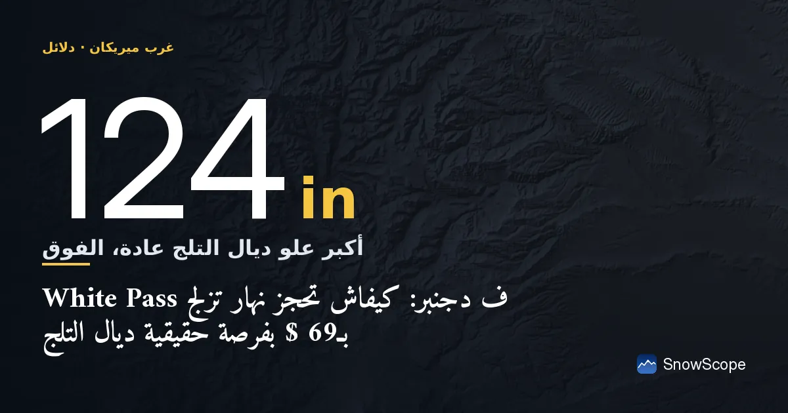

White Pass ف دجنبر: كيفاش تحجز نهار تزلج بـ69 $ بفرصة حقيقية ديال التلج
White Pass كيعطي جوائز للمتزلجين اللي كيخططو مقدما ويختارو أيام الشغل. الجزء الثاني ديال دجنبر هو الوقت اللي فرص التلج كتبدا تكون فـ جانبك، وهاد الوقت بحال هو اللي فيه التذاكر الرخيصة دالة على الإنترنت كتبقى فـ المتناول اذا حجزتي مبكرا.
شوف توقعات التلج مباشرة ديال White Pass Ski Area فالتطبيق ديال SnowScopeالعلو ديال التلج، التنبيهات والخريطة 3D، فابور.
فـ أين White Pass ولاش الأسعار أقل
White Pass تقع على US-12 شرق Packwood، فـ ظل جبل Rainier. المحطة كتمتد من حوالي 1,367 م فـ القاعدة إلى 1,987 م فـ القمة، مع 8 مصاعد وحوالي 36 كم ديال البيستات. ما فاش قرية منتجع، لي كتخلي تذاكر المصاعد أقل من الأسماء الكبيرة على دائرة المحيط الهادئ الشمالية الغربية.
التلج كيوصل بدري هنا. فـ الشتاء العادي، التلج اللي كيبقى تاع منتصف الارتفاع كيوصل فـ أواخر أكتوبر. هاد البداية المبكرة هي اللي مهمة للاعتمادية.

كيفاش التسعيرة الديناميكية كتشتغل ومتاع فاش تقفل 69
White Pass كتبيع تذاكر على الإنترنت مع أسعار كتتحرك لفوق كـ ما التاريخ ديالك كيمتليء. الطابق الأقل كيجلس على 69 دولار للأيام الخاصة فـ غير الذروة (من الاثنين لحد الخميس، أيام ما فاش عطل)، و89 دولار للأيام الذروة (الجمعة لحد الأحد، الأعياد). الأسعار كتطلع كـ ما انت كتقرب، وكتوصل لـ 99 دولار غير ذروة و119 دولار ذروة.
الاستراتيجية بسيطة: شد يوم ديال الشغل على الأقل بـ شنية أيام مقدما وشري على الإنترنت. اذا قعدتي تستنى لحد ما نشرة التلج كتطلع ثم حاولتي تحجزي يوم سبت ديال دجنبر، راح تلقايي نفسك قريب من الطرف فـ القمة ديال الرانج.

دجنبر أسبوع فـ أسبوع: منين فرص التلج كتتبدل
الشتوات اللي فاتو كتضهر صعود واضح فـ الاعتمادية عبر دجنبر. فـ الأسبوع ديال 30 نونبر إلى 6 دجنبر، 74 بالمية ديال الشتوات كانت فيها تلج بزاف (متوسط أسبوعي ديال 50 سم أو أكثر) فـ منتصف الجبل. داك كيرتاع لـ 85 بالمية الأسبوع اللي جاي، 91 بالمية من 14 إلى 20 دجنبر، و96 بالمية فـ الأسبوع الأخير قبل السنة الجديدة.
فـ يوم عادي 15 دجنبر، منتصف الجبل (حوالي 1,677 م) كيهز 102 سم، والقمة كتجلس على 107 سم. بحال 31 دجنبر، منتصف الجبل بني لـ 151 سم. حتى فـ شتاء خفيف (واحد من عشرة)، الـ 15 ديال الشهر كيجيب 42 سم لـ منتصف الجبل—بزاف للبيستات المرتبة بس ما فاش تلج طري عميق.
كيفاش White Pass كتقف مع Mt. Baker و Timberline
Mt. Baker، لـ الشمال الغربي، كتسجل تلج أعمق فـ منتصف دجنبر: 116 سم هو العادي فـ الـ 15. بس Mt. Baker كتبيع التذاكر بـ يوم الزيارة ديالك فقط، ما فاش خصومات مقدما. توقع تدفع 98.80 دولار غير ذروة أو 115.42 دولار فـ أيام الذروة.
Timberline على Mount Hood كتفرض 129 دولار غير ذروة و161 دولار فـ أيام الذروة ليوم كامل. White Pass كتقطع سعر كل الاثنين اذا حجزتي يوم شغل غير ذروة بدري. Mt. Baker كتفوت White Pass فـ التلج بس كتسقل أكثر وكتفرضك تقرر صباح السفر ديالك.
الـ Indy Pass: حساب المحطات المتعددة
White Pass كتلعب مع أكثر من 300 محطة على شبكة Indy Pass للموسم 2026-27. بطاقة Indy Base Pass كتسقل 419 دولار للكبار وكتعطي تذاكر يوم كامل اثنين فـ كل منطقة عضو، مع بعض الأيام المقفلة. بطاقة Indy+ ب 469 دولار كتشيل الأيام المقفلة.
اذا بغيتي تخطططي ثلاثة أو أربعة رحلات للجبال الصغيرة هاد الشتاء—كتمزجي White Pass مع أماكن أخرى فـ المنطقة الأعضاء—البطاقة قد تعطيك أحسن من حجز أيام فردية ب 69 إلى 99 دولار. بـ خطة رحلة أو اثنين، حجز على الإنترنت ب 69 دولار غير ذروة قد يوفر لك الفلوس.
نصايح للي كيتزلجو
- حجز يوم شغل على الأقل بـ شنية أيام مقدما باش تقفل سعر الأرضية ديال 69 دولار.
- اذا الجدول ديالك كيسمح ليك، قصد الأسبوع من 14 إلى 20 دجنبر أو أكثر بعد: الشتوات اللي فاتو كتضهر 91 إلى 96 بالمية ديال الفصول فيها تلج بزاف هاد الوقت، مقابلة 74 بالمية فـ دجنبر المبكر.
- قبل ما تسيري، شوفي نشرة ممر US-12: الطريق قد تقفل أو تحتاج سلاسل فـ وقت العواصف.
- الشتاء اللي فات كان رقيق بزاف هنا، فـ ما تخليش الأمس كيشكل التوقعات ديالك. شوفي خريطة SnowScope الأسبوع قبل ما تروحي باش شوفي كيفاش الموسم ديال هاد السنة كتتقدم.
على هاد الأرقام
العلو ديال التلج فالمحطات هو أكثر تلج فالجهة الفوقانية فالتاريخ المكتوب؛ هادو تقديرات لمنطقة، ماشي قياس فنقطة وحدة. التوقعات يمكن تتبدل. ديما شوف النشرة الرسمية ديال الانهيارات قبل ما تخرج من البيست.
النشرات الرسمية ديال الانهيارات: avalanche.org (US national portal)
كيفاش تستاشهد بهاد المقال
للبحث، التعليم ولا الصحافة: الأرقام والرسومات تقدر تعاود تخدم بيهم بحرية تحت CC BY 4.0 مع هاد الاستشهاد.
SnowScope (2026), White Pass ف دجنبر: كيفاش تحجز نهار تزلج بـ69 $ بفرصة حقيقية ديال التلج, https://snowscope.app/blog/ar/2026/11/white-pass-december-skiing-budget-2026.html, تشاف ف 2026-11-14
SnowScope (Atlas Labs). (2026, November 14). White Pass ف دجنبر: كيفاش تحجز نهار تزلج بـ69 $ بفرصة حقيقية ديال التلج. SnowScope snow reports. https://snowscope.app/blog/ar/2026/11/white-pass-december-skiing-budget-2026.html
BibTeX
@misc{snowscope2026whitepassdecemberskiingb,
author = {{SnowScope (Atlas Labs)}},
title = {White Pass ف دجنبر: كيفاش تحجز نهار تزلج بـ69 $ بفرصة حقيقية ديال التلج},
year = {2026},
month = nov,
howpublished = {\url{https://snowscope.app/blog/ar/2026/11/white-pass-december-skiing-budget-2026.html}},
note = {Published 2026-11-14 17:07 UTC; accessed 2026-11-14}
}· CC BY 4.0 · الطريقة، الداتا والأدوات →
White Pass Ski Area: التلج والحرارة حسب العلو، هاد الشتا مقارنة مع اللي فاتت (الأدوات) →
تابع White Pass Ski Area
فابور: ميساج ملي يجي التلج، والتوقعات كل صباح.